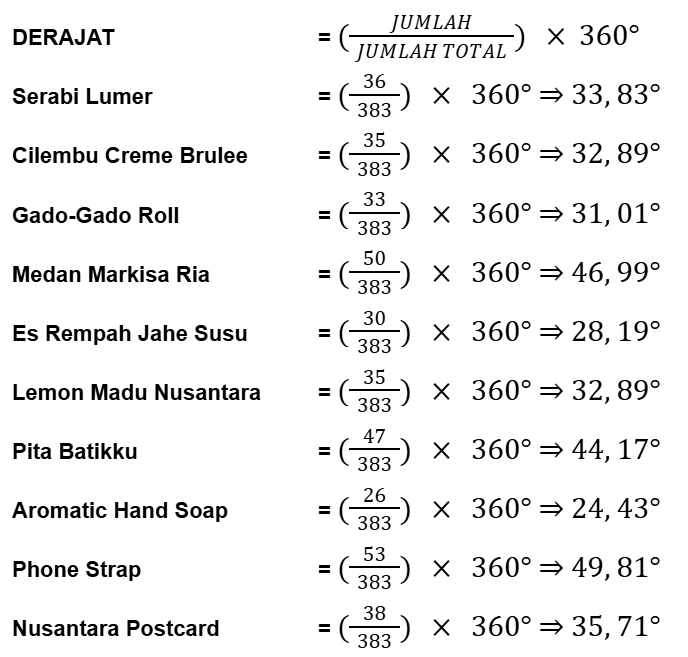

Kami mulai dari diskusi awal, perencanaan, hingga pelaksanaan kami lakukan semuanya dengan bersama-sama. Kami juga mendiskusikan produk-produk bersama. Kami juga membuat group WA untuk mempermudah komunikasi, sehingga setiap kali kami memiliki ide, kami bisa langsung sampaikan dan bisa langsung mendiskusikannya pada pertemuan IL berikutnya. Seluruh proses diskusi kami lakukan selama 2 bulan pertama, lalu pada bulan berikutnya kami melalui uji coba dan pembelian seluruh barang-barang yang dibutuhkan.
Pembuatan Minuman
Kami mendiskusikan bersama mengenai minuman yang akan kami jual. Kami tentukan untuk membuat jus markisa, es lemon madu, dan es jahe susu. Pembagian tugas dalam pembuatan minuman:
Pada tanggal 16 Oktober 2024 kami melakukan uji coba seluruh minuman.
Pembuatan Makanan
Kami mendiskusikan bersama mengenai makanan yang akan kami jual. Kami tentukan untuk membuat serabi es krim, ubi creme brulee, dan gado-gado roll. Pembagian tugas dalam pembuatan makanan:
Untuk serabi, kami tidak membuatnya sendiri. Kami membeli serabi dan es krim yang sudah jadi untuk dijual.
Pembuatan Produk
Kami mendiskusikan bersama mengenai produk yang akan kami jual. Kami tentukan untuk membuat pita batik, post card, dan sabun. Kami mencoba membuat pita batik pada tanggal 4 September 2024 dan melakukan percobaan membuat sabun pada tanggal 23 Oktober 2024.Kami melakukan diskusi mengenai produk PPKn pada tanggal 1 Agustus 2024, kemudian kami juga sudah menentukan batik apa yang akan kami gunakan. Pembagian tugas:
Kami membuat 38 postcard dengan 19 pcs untuk masing-masing design. Kami selesai melakukan packaging untuk seluruh postcard pada tanggal 30 Oktober 2024.
Kami sempat mengalami kesulitan saat menentukan motif batik yang akan kami pilih. Namun, kami berdiskusi dan akhirnya kami menentukan motif batik kawung dan buketan, karena makna dan filosofi yang cocok. Menurut kami dengan dikemas dalam bentuk postcard 2 motif batik tersebut dapat mencerminkan nilai tenggang rasa dan penghargaan tinggi terhadap budaya Indonesia.
TABEL DISTRIBUSI FREKUENSI
DIAGRAM BATANG
DIAGRAM GARIS
TABEL DISTRIBUSI FREKUENSI
DIAGRAM LINGKARAN
PERHITUNGAN PERSENTASE
PERHITUNGAN DERAJAT
PERHITUNGAN LABA/RUGI
TABEL DISTRIBUSI FREKUENSI
MEAN, MEDIAN, MODUS
Cita-cita memiliki peran yang penting dalam hidup kita. Cita-cita merupakan keinginan, tujuan, atau harapan yang ingin dicapai di masa depan. Dengan memiliki cita-cita, kita memiliki dorongan atau arahan yang ingin dituju dalam hidup yang membuat hidup seseorang lebih terarah dan memiliki tujuan yang jelas. Dalam mengejar cita-cita tentu memiliki proses. Proses ini memerlukan waktu yang panjang, tidak ada proses yang instan, untuk itu kita harus menikmati, mensyukuri, dan mempelajari dengan baik proses tersebut. Selain itu, cita-cita juga dapat membantu membentuk identitas seseorang serta membantu untuk memahami dan mengenal dirinya lebih baik.
Melaksanakan sebuah kegiatan bazar dan pentas seni bukanlah suatu hal yang mudah untuk dilakukan. Tentu banyak usaha dan kerja keras yang dibutuhkan. Dalam bazar dan pentas seni ini kami memiliki cita-cita kami bersama, yaitu menyajikan bazar yang memuaskan dimana para konsumen senang dan seluruh produk laku terjual, serta menyajikan pertunjukan pentas seni yang menghibur, menyenangkan, dan bermakna. Hal yang kami lakukan untuk mewujudkan cita-cita tersebut adalah memulai dengan membuat perencanaan dan timeline pengerjaan. Kemudian kami mulai melaksanakannya sedikit demi sedikit serta belajar dari kesalahan yang diperbuat. Kami juga belajar untuk menekan ego masing-masing jika ada perbedaan pendapat. Kami mencari informasi melalui internet untuk menambah ide dan kreativitas. Tidak lupa untuk selalu berkonsultasi kepada guru serta meminta bimbingan dalam setiap proses kami. Selain itu, kami juga melakukannya secara bersama dengan optimis dan pantang menyerah. Terakhir adalah dengan berdoa, memohon penyertaan Tuhan dalam setiap proses dan rintangan yang kami hadapi. Usaha konkret tersebut membantu seluruh proses kami dari awal perencanaan hingga membuat laporan akhir. Bazar kami pun berjalan dengan lancar serta mencapai hasil yang maksimal. Semua ini adalah berkat kerja keras kami dalam mencapai cita-cita bersama.
Beberapa pandangan Kitab Suci mengenai pentingnya merencanakan cita-cita, salah satunya adalah Surat Rasul Paulus kepada Jemaat di Filipi 4:6-7 yang mengatakan “Janganlah hendaknya kamu khawatir tentang apa pun juga, tetapi nyatakanlah dalam segala hal keinginanmu kepada Allah dalam doa dan permohonan dengan ucapan syukur. Damai sejahtera Allah yang melampaui segala akal, akan memelihara hati dan pikiranmu dalam Kristus Yesus." Pada Filipi 4:6-7 dijelaskan bahwa semua orang tidak perlu khawatir akan suatu hal, tetapi berdoa kepada Tuhan dan meminta dengan ucapan syukur. Dengan itu, masa depan akan dilancarkan. Selain itu Surat Rasul Paulus kepada Jemaat di Roma 8:18 mengatakan "Aku yakin, bahwa penderitaan zaman sekarang ini tidak dapat dibandingkan dengan kemuliaan yang akan dinyatakan kepada kita." Pada Roma 8:18 dijelaskan bahwa penderitaan yang dialami sekarang tidak ada artinya dibandingkan dengan kemuliaan dan rencana yang Tuhan sediakan. Pada Surat Rasul Paulus kepada Jemaat di Korintus 10:13 juga mengatakan “Pencobaan-pencobaan yang kamu alami ialah pencobaan-pencobaan biasa, yang tidak melebihi kekuatan manusia. Sebab Allah setia dan karena itu Ia tidak akan membiarkan kamu dicobai melampaui kekuatanmu. Pada waktu kamu dicobai Ia akan memberikan kepadamu jalan ke luar, sehingga kamu dapat menanggungnya.” Pada 1 Korintus 10:13 dijelaskan bahwa setiap pencobaan yang kita alami adalah hal yang biasa. Allah yang setia tidak akan membiarkan kita dicobai melampaui kekuatan yang kita miliki.
Bazar memberikan banyak ilmu dan keuntungan bagi kelompok kami. Dengan ini, kami membagikan berkat-berkat yang telah diterima dari hasil keuntungan kepada mereka yang Kecil, Lemah, Miskin, Tersingkir, dan Difabel. Dari awal, kami sepakat bahwa gaji yang kami terima tidak harus banyak dan cukup untuk menggantikan uang modal masing-masing. Pada akhirnya kelompok kami sepakat untuk memberikan 10% charity dari hasil pendapatan kami. Uang yang terkumpul dibelikan parcel yang didonasikan ke Panti Werdha Melania.
Dengan demikian, kami belajar bahwa membagikan kelebihan dari hasil kerja keras kami kepada mereka yang membutuhkan adalah salah satu cara untuk menjalani ajaran Tuhan. Kami sadar bahwa keuntungan yang kami terima, tidak sepenuhnya milik kami, tetapi itu merupakan anugerah Tuhan yang harus kami salurkan kepada orang lain yang lebih membutuhkan. Tindakan ini merupakan bukti nyata bahwa kita adalah perpanjangan dari tangan Tuhan. Meskipun hasil donasi yang terkumpul tidak banyak, namun kami bersyukur bisa ikut berdinamika dan berbagi kebahagiaan dengan mereka.
Aromatic Soap
Materials:
Tools:
Steps:
Pita Batikku
Materials:
Tools:
Steps: